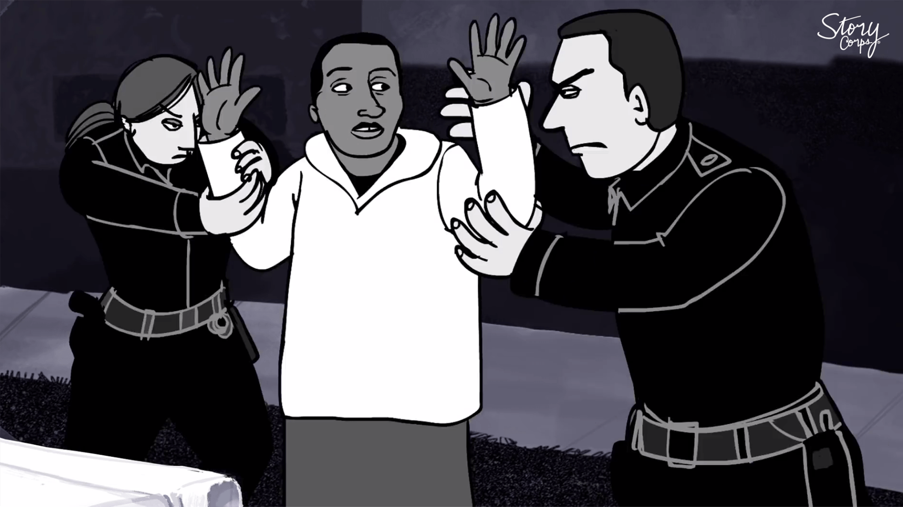

Racial Bias in Traffic Stops
Grade 7, 140min
In this series of activities on evaluating racial bias in traffic stops and searches, students calculate the probabilities of drivers of different races being searched at traffic stops, and compare their findings to census data to determine if the numbers represent random sampling or show evidence of racial bias.
Students begin by random sampling the color of objects in a bag, combining their data with their peers’ data to increase sample size and thus decrease sampling variability. These colors map to race data of the US driving population, which students compare to real-world numbers. Students learn about their rights during traffic stops and why race matters during interactions with police. Next, they create compound probability tree diagrams with data from the Bureau of Justice Statistics to determine probabilities of being stopped by race, which they contrast with general population data.
Students interpret the data (e.g., 10% of all drivers are Black / African American, but 23% of all searched drivers are Black / African American) and form an evidence-backed conclusion about racial bias in national traffic stops. Finally, students use random sampling again to compare data for their county against their national results, bringing the issue closer to home. This project was inspired by this activity from Rico Gutstein.
Topics addressed
- Statistics and probability: random sampling, sampling variability, compound probability, tree diagrams, population sampling
- Social justice context: racial bias in the police force, legal rights during traffic stops
- Primary CT concept: pattern recognition. Students use real-world data to decide if there is evidence of racial bias in traffic stops and searches, computing compound probabilities and leveraging random sampling to develop their argument.
Students will be able to
- Use random sampling to estimate the makeup of a population
- Reduce sampling variability by combining their data with that of their peers to increase their sample size
- Create compound probability tree diagrams
Materials
-
Slides:


-
Student worksheet:


- Traffic stop data for your county or state from the Stanford Open Policing Project
- Colored chips (or similar) in opaque bags for random sampling
Prep
- Create random sampling bags with 72 yellow chips, 12 red chips, 10 green chips and 6 blue chips.
- Download your state’s traffic stop data from the Stanford Open Policing Project and filter it to only traffic stops resulting in searches within your county. Create a Google Sheet document or provide another way for students to access this data.
- Note that the second video includes strong language and brief violent imagery. Consider sending home a permission slip or speaking with your school leadership about its appropriateness. If you cannot show it, think about other ways to help students understand why racial bias in traffic stops is such an important issue.
Suggested lesson breakdown
This activity is more of a practice/review project than a teaching tool, and therefore works best towards the end of the unit. Students can work individually, in pairs or in small groups. The timing suggestions below are estimated and are very flexible based on your students’ pace.
- 15min – small group random sampling with colorful objects in bags
- 15min – combining small group samples to reduce sampling variability
- 15min – comparison to real-world population data
- 15min – introduction to traffic stops with two videos and class discussion
- 20min – analyzing traffic stop data by race with a simple tree diagram
- 30min – analyzing traffic search data by race with a compound probability tree diagram
- 10min – comparing percentages of drivers searched vs all drivers by race
- 20min – exploring local county data to decide if local results align with national results
Common Core standards
-
CCSS.Math.Content.7.SP.C.8
Find probabilities of compound events using organized lists, tables, tree diagrams, and simulation. -
CCSS.Math.Content.7.SP.A.1
Understand that statistics can be used to gain information about a population by examining a sample of the population; generalizations about a population from a sample are valid only if the sample is representative of that population. Understand that random sampling tends to produce representative samples and support valid inferences. -
CCSS.Math.Content.7.SP.A.2
Use data from a random sample to draw inferences about a population with an unknown characteristic of interest. Generate multiple samples (or simulated samples) of the same size to gauge the variation in estimates or predictions.